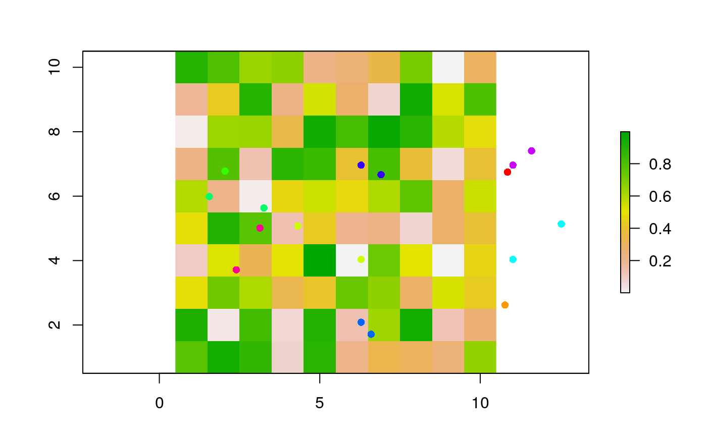

Move the turtles to their neighboring patch with the lowest value.
downhill(world, pVar, turtles, nNeighbors, torus = FALSE) # S4 method for worldMatrix,missing,agentMatrix,numeric downhill(world, turtles, nNeighbors, torus) # S4 method for worldArray,character,agentMatrix,numeric downhill(world, pVar, turtles, nNeighbors, torus = FALSE)
| world |
|
|---|---|
| pVar | Character. If the |
| turtles |
|
| nNeighbors | Integer: 4 or 8. Represents the number of neighbor |
| torus | Logical to determine if the |
AgentMatrix representing the turtles with updated
coordinates and updated data for their heading values and
previous coordinates prevX
and prevY.
If no neighboring patch has a smaller value than the patch where the
turtle is currently located on, the turtle stays on this patch. It still
moves to the patch center if it was not already on it.
If there are multiple neighboring patches with the same lowest value,
the turtle chooses one patch randomly.
If a turtle is located on a patch on the edge
of the world and torus = FALSE, it has fewer
neighboring patches as options to move than nNeighbors; if
torus = TRUE, the turtle can move on the other side of the world to
move downhill and its choice of neighboring patches is always equals to
nNeighbors.
Wilensky, U. 1999. NetLogo. http://ccl.northwestern.edu/netlogo/. Center for Connected Learning and Computer-Based Modeling, Northwestern University. Evanston, IL.
w1 <- createWorld(minPxcor = 1, maxPxcor = 10, minPycor = 1, maxPycor = 10, data = runif(100)) t1 <- createTurtles(n = 10, coords = randomXYcor(w1, n = 10)) plot(w1)t1 <- downhill(world = w1, turtles = t1, nNeighbors = 8) points(t1, col = of(agents = t1, var = "color"), pch = 16)